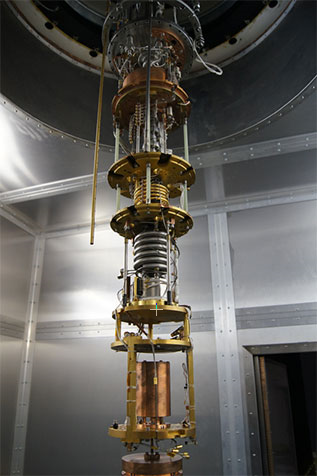
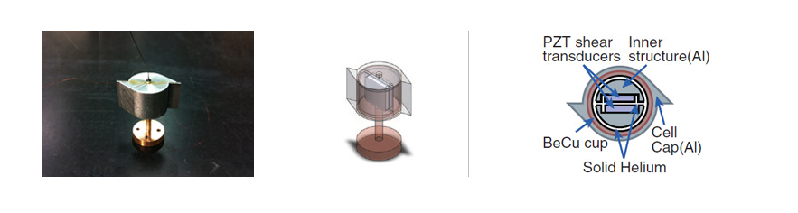
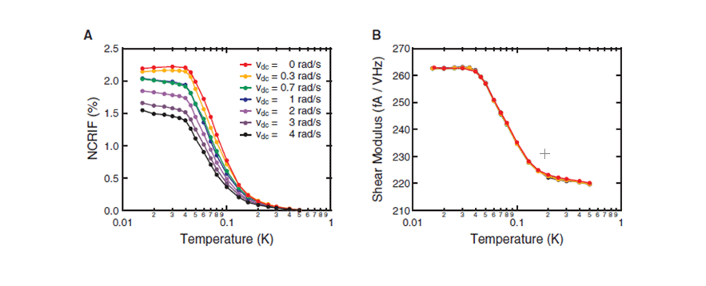

주제별 연구성과
주제별 연구성과
KAIST RESEARCH ACHIEVEMENTS
초고체 발견과 존재규명
초고체의 발견자,
초고체 논란을 종결짓다.
물리학과 김은성
요약
초고체 양자물성 연구단은 RIKEN과의 공동연구를 통해 ‘초고체’가 존재한다는 사실을 규명했다. 초고체는 연구단장인 김은성 교수가 2004년 처음 보고한 물질의 상태로 기존의 고체, 액체, 기체와는 성질이 다르다. 김 교수의 발견 후 고체가 단단해지는 현상을 물질의 새로운 상태로 오해한 것뿐이라는 반론이 있었다. 이번 연구로 논란을 종결짓고 초고체가 실제로 존재함을 증명했다.
연구내용
2004년 당시 펜실베니아 주립대학교 물리학과의 박사과정 학생이었던 김은성 교수는 고체 헬륨에서 기존의 상식을 뒤집는 새로운 현상을 발견했다. 이 현상은 생활 속의 비유를 통해 더욱 쉽게 이해할 수 있다. 집에서 흔히 볼 수 있는 둥그런 컵에 젤리를 가득 담았다고 상상해 보자. 컵을 손으로 잡고 돌리면 안에 들어있 는 물질도 같이 회전한다. 이는 컵의 표면과 젤리의 표면 사이에 점성이 작용했기 때문이다. 하지만 컵 안에 든 물질이 물리학자들이 발견한 '초유체'라는 상태 가 되면 물질의 고유 성질인 점성이 없어진다. 액체 헬륨을 매우 낮은 온도(약 2K)까지 냉각하면 이러한 초유체로 상태가 바뀌는 것을 관찰할 수 있다. 김은성 교수의 실험은 위에서 언급한 예와 매우 유사하다. 단, 둥그런 컵을 돌려주는 것 대신 비틀림 진동자라는 실험 장치를 일정한 속도로 회전 방향으로 진동시킨다는 것과 액체 대신 고체 헬륨을 사용했다는 것만 다르다.
초고체 존재 논란 마침표 찍어
만약 액체 헬륨의 경우와 같이 고체 헬륨에서도 점성이 없어지는 '초유체'적인 현상이 나타난다면, 내부의 고체 헬륨은 그릇(비틀림 진동자)을 아무리 진동시켜도 그 진동으로부터 분리돼 움직이지 않을 것이다. 실제 김은성 교수의 실험 결과, 자연계에서는 존재할 수 없을 만큼 낮은 온도인 약 0.2K 근처에서 고체 헬륨을 담은 그릇을 따라 진동하는 헬륨의 양이 줄어들었다. 이는 일부의 고체 헬륨이 마치 초유체와 같은 성질을 띠게 된 것으로, 기존 물리학의 상식을 뒤집는 결과였다. 김은성 교수는 두 가지 공존할 수 없는 성질을 동시에 가지고 있는 고체 헬륨의 상태를 '초고체'라고 이름 지었다.김은성 교수는 두 가지 새로운 실험 장치를 가지고 초고체를 둘러싼 논란을 종식시킬 실험을 준비했다. 그는 먼저 일본 RIKEN과의 협력 연구를 통해 회전식 냉각장치를 사용하기로 했다. 회전식 냉각장치를 도입한 이유는 간단하다. 일반적으로 초유체의 양은 초유체를 담은 그릇의 회전 속도가 커질수록 줄어드는 고유한 특성이 있다. 고체 헬륨이 정말로 초유체적인 성질을 가지고 있다면, 즉 초고체라는 물질의 상태가 정말 존재한다면 회전식 냉각장치를 빨리 회전시킬수록 그 안에 든 초고체의 양이 줄어들어야 한다. 반면에 고체 헬륨의 단단한 정도는 물질 고유의 성질이기 때문에, 냉각 장치의 회전 속도를 아무리 변화시켜도 그 값이 전혀 변하지 않는다. 따라서 초고체에 반론을 제기하는 물리학자들의 의견처럼 2004년의 실험 결과가 단순히 고체 헬륨의 단단함 때문에 나타난 것이라면, 회전 속도를 변화시켜가며 진동 주기를 통해 초고체의 양을 측정했을 때, 그 값이 변해서는 안 된다. 김은성 교수는 나아가 이런 가설을 확실히 증명하기 위해 초고체로 변한 고체 헬륨의 양과 그것의 단단함을 동시에 측정할 수 있는 새로운 비틀림 진동자를 고안했다. 기존의 실험들에서는 초고체의 양과 단단한 정도 중 하나만을 측정했기 때문에 상호 비교해보는 해석에 한계가 있었던 반면, 똑같은 고체 헬륨의 두 가지 물리량을 함께 측정할 수 있으면 둘의 상관관계를 명확히 볼 수 있기 때문이다.

만약 단순히 고체 헬륨이 더 단단해지는 현상을 초고체 상태의 발현으로 오해하고 있는 것이라면, 회전식 냉각장치의 회전 속도에 따라 두 물리량이 변하는 경향이 같아야 한다. 또한 회전식 냉각장치의 회전 속도를 바꾸었을 때, 고체 헬륨의 단단한 정도가 초고체의 양과 같은 양상으로 변화하지 않는다면 두 현상은 원인이 다른 독립적인 현상이라고 결론지을 수 있다. 결국 2010년 KAIST-RIKEN 공동연구팀의 실험 결과 두 현상은 실제로 다른 현상임이 밝혀졌다. 실제로 고체가 초유체적 성질을 가진다는 것을 다시 한 번 증명한 셈이다. 이로써 초고체의 존재 여부를 둘러싼 가장 큰 논란에 마침표를 찍었다. 김은성 교수 연구팀은 이번 성과를 통해 고체 헬륨이 초유체와 같이 움직인다는 사실을 재차 확인했다. 또한 비틀림 초고체 상태의 발현과 고체의 단단함은 직접적인 인과관계가 없는 다른 현상이라는 사실도 증명했다. 결론적으로 이번 연구는 초고체 발견을 둘러싼 논란을 종식시키고, 마지막 퍼즐 조각인 초고체의 물리적 원인을 밝히기 위한 실마리를 발견한 것으로 평가받는다.
 그림 2. 진동 주기 이외에도 층밀림 탄성까지 측정할 수 있도록 고안된 새로운 비틀림 진동자. 이 비틀림 진동자는 내부에 압전변환기를 부착하여 고체의 단단함을 측정 할 수 있도록 설계되었다.

그림 3. Science지에 발표한 실험 결과. 회전식냉각장치의
회전 속도를 증가시키면서 측정한 결과 초고체의 양을 알려주는
NCRI(사라진 회전 관성의 총량, 즉, 초고체의 양과 비례한다)이 점점 줄어들며 (왼쪽), 이는 초유체의 대표적 성질이다.
하지만 단단함은 냉각장치의 회전 속도에 전혀 영향을 받지않았다. (오른쪽) (H.Choi et al, Science 330, 1512 (2010))
연구비 지원
ㆍ창의적 연구사업
ㆍ초고체 양자물성 연구단
수상
ㆍH. Choi, D. Takahashi, K. Kono and E. Kim, Science 330, 1512 (2010)
관련문헌
ㆍ"기체, 액체, 고체 뛰어넘는 새 물질 '초고체'"(과학과 기술 2011년 1월호 36페이지)